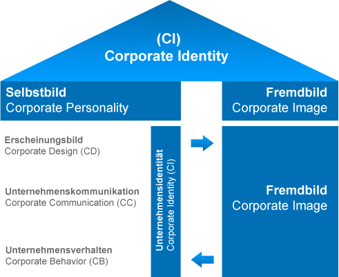
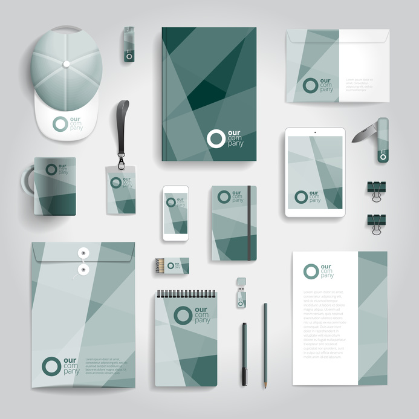

Corporate Identity
Corporate Identity ist die strategisch geplante und eingesetzte Selbstdarstellung und Verhaltensweise eines Unternehmens nach innen und aussen. Es besteht aus dem Corporate Behaviour, Corporate Communication, Corporate Design. Die Identität oder Persönlichkeit wir durch das Selbstbildnis und dem Fremdbild bestimmt. Durch diese Erkenntnis positioniert sich die Firma und macht eine Zielgruppe ausfindig. Dann kommt das Corporate Design welches das Erscheinungsbild der Firma ist.
Corporate Behaviour
Das Corporate Behavior (deutsch: Unternehmensverhalten / Unternehmenskultur) lässt sich wohl am besten als eine Art Verhaltenscodex beschreiben. Das Corporate Behavior (CB) gehört wohl zu den stärksten und gleichzeitig schwierigsten Elementen der Corporate Identity. Das Ziel des Corporate Behaviors ist es, zum einen das Gesamtbild des Unternehmens in der Öffentlichkeit zu verbessern und zum anderen eine positive Arbeitsatmosphäre zu schaffen, die im Endeffekt zu besseren Leistungen der Mitarbeiter führt. Corporate Behavior setzt auf die Glaubwürdigkeit des Unternehmens.
Corporate Communication
Die Corporate Communication umfasst sämtliche Kommunikation Instrumente und –Massnahmen eines Unternehmens, die sowohl unternehmensintern als aus auch extern angewendet werden.
Corporate Design
Corporate Design ist das Unternehmenserscheinungsbild. Überall wo das Unternehmen in Erscheinung tritt, kann Corporate Design eine Rolle spielen, z.B. Unternehmensgebäude/ Fahrzeuge, Kleidung der Mitarbeitenden, Druckmaterialien wie Visitenkarten, Briefkopf, Broschüren usw. Auch auf Online-Medien Website, Werbung usw. kann man CD verwenden. Die Vorteile des CD sind einerseits die Schnellere Wiedererkennung bei den Zielgruppen und andererseits sind es die Effizientere Realisierung der Materialien, weil die Vorgaben feststehen. Die Funktion von bewusst gesteuertem und angewandtem Corporate Design, dient primär dem Vertrauensgewinn der Konsumenten und einer klaren Identifikation – auch bei den eigenen Mitarbeitern. Im Endeffekt führt ein stringent umgesetztes CD zu einem klaren Unternehmensprofil am Markt.
